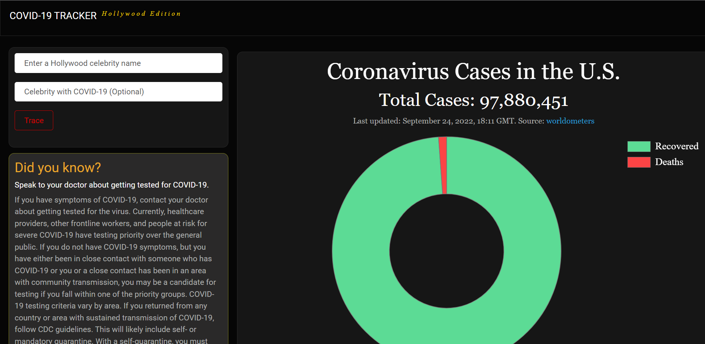

Covid-19 Tracker
I build this website during the COVID-19 pandemic in order to trace back someone who has been in contact with someone else having tested positive for COVID-19.
It uses AI algorithm to find the shortest path between two people. For this project I used the database of all the actors in Hollywood.
The result would display all the people that the person has been in contact with tracing back to the one tested positive for COVID-19 and the chances of getting COVID-19 himself.
It also fetches the live COVID-19 cases in the United States by using a web scraper to get the latest updates.
It also displays random COVID-19 facts everytime you visit the page.
Technologies:
- - Python
- - Django
- - JavaScript
- - Postgres
- - Heroku
- - Chart JS
- - BeautifulSoup4